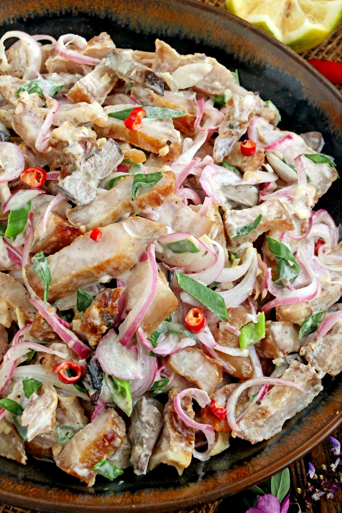

Dinakdakan
This is a deviation from the authentic recipe in which pork mask, liver,
and innards are commonly utilized. This dish has the same delicious
taste and it should be easier to prepare.
Ingredients
- Liempo
- Mayonnaise
- Knorr Seasoning
- Calamansi
- Red chili peppers and Long green chili peppers
- Onions or Yellow onions
- Salt
- Pepper
How to Cook:
- Boil pork belly until tender with salt.
- Grill the pork belly. After grilling, cut it into bite size.
- Make a mixture of Mayonnaise, Seasoning, pepper, calamansi, and add whatever you want and mix it well.
- Cut the chilies and onions and mix all the ingredients and adjust the taste according to your preference.
- Eat and Enjoy!